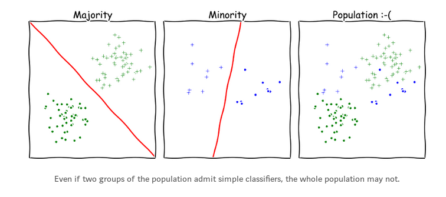

Trust me, I'm a data scientist
What could possibly go wrong?
Let's build an app using ML!
We want to help high schoolers finding the perfect major for them.
Let's collect data!
We want to measure academic perfomances.
- Let's use marks!
- Let's use marks with a weight depending on the high school!
- Let's use marks...?
Data collection
Our algorithm will learn from historical data
... and historical data is biased....
Let's encode some categorical data!
Word embeddings for the win
Bag-of-words
['nurse', 'physician', 'math teacher']
'nurse': [1, 0, 0]
'physician': [0, 1, 0]
'math teacher': [0, 0, 1]
Word2Vec
['nurse', 'physician', 'math teacher']
'nurse': [.91, .87, .2, ...]
'physician': [.85, .86, .35, ...]
'math teacher': [.53, .64, .78, ...]
Word embeddings for the win
It also learns analogies: king - man + woman ~ queen
Word embeddings for the win
Semantics are learned from a corpus of texts...
... which are often biased.
Word embeddings for the win
computer programmer - man + woman ~ homemaker
Word embeddings for the win
Plug in a logistic regression to learn sentiment analysis
"My name is Emily" -> 2.23
"My name is Shaniqua" -> -0.47
Word embeddings for the win
All is not lost!
We can learn a linear transformation so that "nurse" is at the same distance from "man" to "woman".
Word embeddings for the win
We can learn a linear transformation so that "nurse" is at the same distance from "man" to "woman".
Let's create a quick POC !
Load some data on my laptop, just to try a few things. No need for encryption.
What could possibly go wrong...?
Data security
The only data that cannot get stolen is data you don't have
Data security
Encrypt all sensitive and personal data
Data security
Delete what is no longer needed
Yeah but it's okay, I anonymized the data
At least I removed all the names and adresses.
Data anonymization
- Is there enough data in the dataset to identify one person?
- Is there enough data, in conjunction with publicly available data, to identify one person?
- US Department of Health:
"remove zip codes if <=~20~000 people"
What does it mean, for an algorithm to be fair?
Let's say we want to score students on a scale of academic ability.
- Calibration: students with a score of 5 have a probability of 5% to drop out, regardless of their race
- Negative class balance: students who did not drop out have the same average score regardless of their race
- Positive class balance: students who did drop out have the same average score regardless of their race
What does it mean, for an algorithm to be fair?
It is proven that you cannot have all three conditions to be true simultaneously.
Who needs interpretability when you can have deep learning?
A cautionary tale
Who needs interpretability when you can have deep learning?
Before building a model: visualisation(PCA, t-SNE), exploratory analysis (clustering)
While building a model: sparsity, rule-based, prototype-based
After building a model: sensitivity analysis, surrogate models
Who needs interpretability when you can have deep learning?
Have you been introduced to GDPR?
Coming May 2018
Who needs interpretability when you can have deep learning?


Also, from a security standpoint: Adversarial attacks on deep learning
Oh, you have minority classes...?
The less data you have, the less accurate you are.

Oh, you have minority classes...?
- In cities: large high school -> more academic success
- In the country: small high school -> more academic success
Oh, you have minority classes...?
Minority subconcepts are considered as noise.
How to overfit with a clean conscience?
We have learned a pretty classifier, let's evaluate how well it does.
Of course we evaluate on a separate dataset. But
- We fitted our preprocessing step on the whole data.
- We chose which algorithm to use based on performance on the hold-out data.
- We use accuracy as a measure of performance even though we have minority classes.
Biases are not only in the data
Let's talk about cognitive bias.
- Apophenia
- Illusory causation
- Confirmation bias
The dark side of feedback loops
2015-17 drop-out rates in STEM: 13% 9% 10%
2015-17 gender ratio: 25% 75%
Objective: minimize drop-out rate
2018 gender ratio: 15% 85%
2018 drop-out rates in STEM: 15% 9% 9.9%
Make it scale !
So okay, our app is not perfect, but it still might be useful.
What if it would be used as the official software for all French students?
Make it scale !
“So to sum up, these are the three elements of a WMD: Opacity, Scale, Damage.”
Cathy O'Neil, Weapons of Math Destruction
Key Takeaways
- Data is not neutral
- Algorithms are not objective
- Data scientists are not exempt from bias
Thanks for your attention!
sarah.diot-girard@people-doc.com

We're hiring !
References and more >
References
About data biases
How to make a racist AI with Word Embeddings
Data security and data anonymization
Algorithmic fairness
Mathematical definitions of fairness
Inherent Trade-Offs in the Fair Determination of Risk Scores
Model interpretability
A great talk about why we need interpretable models
A paper about how to evaluate rigorously the interpretability of a model
A tutorial about model interpretability
Python libraries: LIME (paper) and ELI5
Cognitive biases and overfitting
Ethical issues in applications
Weapons of Math Destruction, Cathy O'Neil: a book about unethical and dangerous applications of Machine Learning
A quick blog post illustrating some ideas of the WMD book
Further reading
A good summary of most typical issues